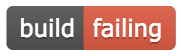

Quick Intro to Package Development with devtools
Ben Best
2016-03-28
Overview
Packages are the preferred way to bundle up functions, so others can easily use them. You use packages all the time, such as every time you load them with the library() function.
The following quick introduction is based on distilling the most minimal example from the following:
The R code below walks you through creation of an R package called mypackage having the following top level file and folder (*/) structure:
mypackage
├── DESCRIPTION
├── NAMESPACE
├── data/
├── man/
├── R/
├── tests/
└── vignettes/These files and folders correspond to the following characteristic offerings of an R package:
- functions in
R/scripts. Functions are written here with input arguments and return objects. - documentation in
man/. Documentation is automatically generated from theroxygen2comments in the R scripts. Help is then available from the console via?add(eg foradd()function). - data in
data/. Data can then be loaded viadata(x)(eg forxdata). - tests in
tests/. Tests ensure checking for consistent behavior as your functions grow. - vignettes in
vignettes/. Vignettes are a long form of documentation that allow you to walk the user through a larger amount of analysis, especially useful for showing relatedness between functions. Since they are rendered from Rmarkdown to HTML, you can show plots, tables and more richly formatted documentation. - sharing via
install_github(). By pushing your code to Github, you can then share a single line of code using thedevtools::install_github()function so others can install and use your function immediately.
Create repo
Start by creating a repository in Github. For this tutorial, I recommend:
- Owner:
(for me: bbest), Repository: mypackage - Description: R package to do some basic math
- YES, Initialize this repository with a README
Now git clone this repository to your machine from within RStudio’s menu File > New Project > Version Control > Git:
- Repository URL: https://github.com/
/mypackage.git (for me: https://github.com/bbest/mypackage.git) - Project directory name: mypackage
- Create project as subdirectory of: ~/github (or wherever you like)
Load devtools
The devtools package makes R packages easy. All the functions below are from this library. Thank you @hadley!
# load devtools package
if (!require('devtools')) install.packages('devtools')
library(devtools)Setup the package
Setup the existing folder to be a package. (Alternatively you can use devtools::create() to create from scratch.)
setup()Notice how this function creates the DESCRIPTION and NAMESPACE files, and R folder.
Creating package 'mypackage' in '/Users/bbest/github/mypackage'
No DESCRIPTION found. Creating with values:
Package: mypackage
Title: What the Package Does (one line, title case)
Version: 0.0.0.9000
Authors@R: person("First", "Last", email = "first.last@example.com", role = c("aut", "cre"))
Description: What the package does (one paragraph).
Depends: R (>= 3.2.3)
License: What license is it under?
LazyData: trueNotice how if you re-open RStudio to mypackage.Rproj an extra Build tab appears, per the rstudio-IDE-cheatsheet:

See more:
- devtools-cheatsheet: Package Structure, Setup, Write code in R/
- Package structure · R packages
Functions in R/
Now create an R file with a custom add() function, load the package with devtools::load_all() and try out the function.
library(devtools)
# write add function to add.R file in R/ folder
cat("add <- function(x, y){ x+ y }", file='R/add.R')
# load the library from source
load_all()
# try function
add(1,2)Note the function cat() which “concatenates”, or joins together, R objects and prints. This is a programmer’s way of creating a file with content. Normally you would just create this new file in the RStudio editor.
Document to man/
Add documentation to the custom add() function using roxygen2 style, generate documentation with devtools::document(), reload the package, and try out the help documentation.
# write add function with documentation
cat(
"#' Add together two numbers.
#'
#' @param x A number.
#' @param y A number.
#' @return The sum of \\code{x} and \\code{y}.
#' @examples
#' add(1, 1)
#' @export
add <- function(x, y){
x+ y
}", file='R/add.R')
# update R documentation (*.Rd) in manual folder man/
document()
# load the library from source
load_all()
# try function
add(1,2)
# check documentation
?addNotice how document() creates the man/add.Rd for the add() function (and would other man/*.Rd files for more functions) and updates DESCRIPTION and NAMESPACE files.
Updating roxygen version in ~/bbest.github.io/mypackage/DESCRIPTION
Writing NAMESPACE
Writing add.RdSee more:
- devtools-cheatsheet: Write code in R/, Document in man/, Organize in NAMESPACE, Setup in DESCRIPTION
- R code · R packages
- Package basics · R packages
- Object documentation · R packages
Add data to data/
Add custom data with devtools::use_data(), and load the data with base function data().
# create data
x = 1:10
y = 1:100
# store in data/*.rda
use_data(x, y)
# use data in example
load_all()
data(x,y)
add(x,y)Notice how use_data() creates the data/*.rda files.
Saving x, y as x.rda, y.rda to ~/bbest.github.io/mypackage/dataSee more:
- devtools-cheatsheet: Add data in data/
- Data · R packages
Test in tests/
Create test infrastructure with devtools::use_testthat(), create some tests in test_add.R, and run tests with devtools::test().
# setup for tests (one time only)
use_testthat()
# write test for add function
cat(
"context('add')
test_that('add works', {
expect_equal(add(1,1), 2)
expect_equal(add(1,2), 3)
expect_equal(add(1,100), 101)
})
", file = 'tests/testthat/test_add.R')
# run tests
test()The use_testthat() creates the test/testthat folder and tests/testthat.R main script. Adding tests/testthat/test_add.R adds 3 tests, each of which get executed when running test() which reports success with a single . and finishes with DONE.
Loading mypackage
Loading required package: testthat
Testing mypackage
add : ...
DONE See more:
- devtools-cheatsheet: Test in tests/
- Testing · R packages
Check with Travis
Once you have tests built, wouldn’t it be nice to automatically run the tests every time a new commit is made to Github? This is called “continuous integration” in developer circles, and the idea is to continuously integrate tests with changes in code to ensure all is happy as you develop. If any of the tests fail, you get emailed and can fix the problem sooner than later. There’s a great free service by Travis CI that can be setup to run any tests on any Github repository at every new commit that gets pushed or merged.
Before you run the next command to add the Travis CI infrastructure, I recommend running a git commit and push.
use_travis()This creates the special file .travis.yml containing the test instructions.
Adding .travis.yml to mypackage. Next:
* Turn on travis for this repo at https://travis-ci.org/profile
* Add a travis shield to your README.md:
[](https://travis-ci.org/bbest/mypackage)Per the instructions, visit https://travis-ci.org/profile to create a profile to link to your Github account and turn on Travis with a little slider to your mypackage.
Let’s add the “travis shield” line above to the README.md (replace with your Github <user>, not bbest). Note the append=T argument.
cat('
[](https://travis-ci.org/bbest/mypackage)
', file='README.md', append=T)Do another git commit and push. Now visit travis-ci.org/USER/mypackage (for me travis-ci.org/bbest/mypackage). I can see that based on the Build History, I get the following “build failing” based on 2 warnings converted to errors:
Checking package
checking DESCRIPTION meta-information ... WARNING
Non-standard license specification:
What license is it under?
Standardizable: FALSE checking for missing documentation entries ... WARNING
Undocumented code objects:
‘x’ ‘y’
Undocumented data sets:
‘x’ ‘y’
All user-level objects in a package should have documentation entries.
See chapter ‘Writing R documentation files’ in the ‘Writing R
Extensions’ manual. DONE
Status: 2 WARNINGs
R CMD check logs
Found warnings, treating as errors (as requested).You can also see this “build failing” status at github.com/USER/mypackage (for me github.com/bbest/mypackage) which shows the README.md at the bottom with the “travis shield”:

Let’s fix these warnings to get the build to pass:
- use permissive MIT license. See Choosing an Open Source License.
- add documentation to the data
# fix license
use_mit_license()
# add data documentation
cat("
#' 1 thru 10
#'
#' A simple dataset
'x'
#' 1 thru 100
#'
#' Another simple dataset
#'
'y'
", file = 'R/data.R')
document()Now git commit and push again, to see if that fixes your build to build passing:
See more:
Teach with vignettes/
Finally, you can teach with vignettes, which are a longer form than just a single function or data help. Better yet, you can write them as an Rmarkdown file so they can render tables, images, etc.
# create a draft vignette
use_vignette('math')
# build vignettes, install locally
tgz = build()
install_local(tgz)
# try vignette
library(mypackage)
vignette('math')Notice how use_vignette('math') creates vignettes/math.Rmd, an Rmarkdown file which you can freely edit. The default draft with title “Vignette Title” by “Vignette Author” should be customized, but offers some helpful tips on how to craft a vignette. See this example as rendered math.html.
See more:
- devtools-cheatsheet: Teach in vignettes/
- Vignettes · R packages